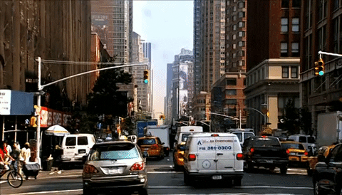

"I will be happy if, when you enjoy this album, the surrounding scenery can be seen in a slightly different light." - Hiroshi Yoshimura
Peace in chaos.
Sound transforms your environment.
Song - "Dance PM"
BACK